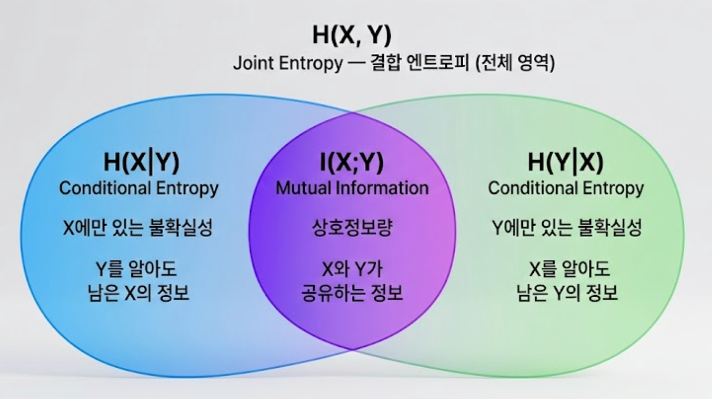

Summary
- 상호정보량(MI)은 피어슨 상관계수가 포착하지 못하는 비선형 관계까지 측정하는 정보 이론 기반 의존성 척도이다.
- Shannon 엔트로피에서 파생된 개념으로, “Y를 알았을 때 X의 불확실성이 얼마나 줄어드는가”를 수치화한다.
- I(X;Y) = H(X) − H(X|Y) 로 표현되며, 독립이면 정확히 0이다.
- EDA에서 피처 선택, 비선형 관계 탐지, 결측 메커니즘(MNAR) 탐지에 활용된다.
등장 배경 — 피어슨 상관계수의 한계
상호정보량은 선형 관계만 포착하는 피어슨 상관계수의 한계를 극복하기 위해, Claude Shannon의 1948년 정보 이론에서 유래한 비선형 통계적 의존성 척도이다.
피어슨 상관계수의 문제
EDA에서 두 변수의 관계를 보는 가장 흔한 도구는 **피어슨 상관계수(Pearson r)**이다.
피어슨 r은 선형 관계만 포착한다.
피어슨 r = 0이지만 완벽한 2차 관계인 예
X = [-3, -2, -1, 0, 1, 2, 3], Y = X²
피어슨 r ≈ 0 → "관계 없음"이라고 판단
실제로는 완벽한 2차 함수 관계 (Y = X²)
→ 상관계수가 0이라고 해서 독립이 아니다!비선형 관계, 복잡한 패턴을 잡기 위해 정보 이론 기반의 측도가 필요하다.
핵심 파생 개념
상호정보량은 엔트로피를 기반으로 하므로, 엔트로피와 조건부 엔트로피를 먼저 이해해야 한다.
엔트로피 (Entropy) — 불확실성의 양
단위: 비트(bit). 로그 밑이 2일 때.
중학생 예시 — 동전 던지기 vs 주사위
- 공정한 동전: 앞=0.5, 뒤=0.5 → H = 1 bit (반반이라 가장 불확실)
- 조작된 동전: 앞=0.99, 뒤=0.01 → H ≈ 0.08 bit (앞면이 거의 확실)
- 주사위(6면): 각 면=1/6 → H ≈ 2.58 bit (동전보다 더 불확실)
핵심 성질:
- 모든 경우가 동등하게 발생할 때 최대
- 한 결과만 확실히 발생할 때 H = 0
- 항상 성립
결합 엔트로피 (Joint Entropy)
두 변수를 동시에 관측할 때의 불확실성이다.
- X, Y가 완전히 독립이면:
- X, Y가 완전히 같으면:
조건부 엔트로피 (Conditional Entropy)
Y를 이미 알 때, X의 불확실성이 얼마나 남았는가를 나타낸다.
중학생 예시 — 날씨와 우산
- H(우산): “오늘 우산을 챙길까?” → 불확실성 높음
- H(우산 | 날씨=비): 비가 온다는 것을 알면 → 거의 0 (당연히 챙김)
- H(우산 | 날씨=맑음): 맑다는 것을 알면 → 낮음 (거의 안 챙김)
- 날씨를 알면 우산 결정의 불확실성이 크게 줄어든다 = MI가 크다
성질: — 추가 정보는 불확실성을 줄이거나 같게 유지한다.
상호정보량 공식
상호정보량 I(X;Y)는 Y를 알았을 때 X에 대해 얻는 정보의 양으로, Y가 X의 불확실성을 얼마나 줄여주는가를 측정한다.
이산형 공식
- : 결합 확률
- , : 주변 확률 (marginal)
- 분수 = “실제 결합 확률” ÷ “독립 가정 시 결합 확률”
엔트로피로 표현한 동치 공식
벤 다이어그램으로 이해

그림. 상호정보량-벤다이어그램
| 영역 | 수식 | 의미 |
|---|---|---|
| 파란 영역 | Y를 알아도 남은 X의 불확실성 | |
| 보라 영역 | X와 Y가 공유하는 정보 (상호정보량) | |
| 초록 영역 | X를 알아도 남은 Y의 불확실성 | |
| 전체 박스 | X, Y를 동시에 관측할 때의 총 불확실성 |
연속형 공식
실무에서는 k-NN 기반 추정 또는 커널 밀도 추정(KDE)으로 계산한다.
핵심 성질
상호정보량은 아래 다섯 가지 핵심 성질을 가진다.
| 성질 | 내용 |
|---|---|
| 비음수 | 항상 성립 |
| 대칭 | |
| 독립 시 0 | X, Y 독립 |
| 비선형 포착 | 피어슨 r이 0이어도 MI는 양수일 수 있음 |
| 단위 없음 | 정규화하면 0~1 범위로 변환 가능 |
독립이면 왜 0인가:
X, Y 독립이면: p(x,y) = p(x) · p(y)
→ log[ p(x,y) / (p(x)·p(y)) ] = log(1) = 0
→ I(X;Y) = 0수치 예시 — 스팸 메일 분류
배경
MI는 NLP에서 어떤 단어가 스팸 분류에 가장 유용한 피처인지 결정하는 데 가장 고전적으로 사용된다.
문제 설정
할인 단어 포함 여부와 스팸 여부의 결합 분포
X = "메일에 '할인' 단어 포함 여부" (0=없음, 1=있음)
Y = "스팸 여부" (0=정상, 1=스팸)
1,000통 중:
할인 있음 + 스팸: 400건 p(X=1, Y=1) = 0.40
할인 있음 + 정상: 50건 p(X=1, Y=0) = 0.05
할인 없음 + 스팸: 100건 p(X=0, Y=1) = 0.10
할인 없음 + 정상: 450건 p(X=0, Y=0) = 0.45MI 계산
주변 확률:
단어별 MI 비교
| 단어 | MI (bit) | 해석 |
|---|---|---|
| ”할인” | 0.524 | 스팸 분류에 매우 유용 |
| ”무료” | 0.391 | 유용 |
| ”클릭” | 0.287 | 보통 |
| ”안녕” | 0.012 | 거의 무관 |
| ”입니다” | 0.002 | 무관 |
→ MI가 높은 단어 상위 N개를 피처로 선택하면 효율적인 스팸 필터를 구축할 수 있다.
EDA 활용처
피처 선택 (Feature Selection)
MI를 피처와 타겟 간에 계산하면 비선형 관계도 포착하여 피처 중요도를 산출한다.
scikit-learn의 MI 기반 피처 스코어링
from sklearn.feature_selection import mutual_info_regression, mutual_info_classif
# 회귀 (연속형 타겟)
mi_scores = mutual_info_regression(X, y)
# 분류 (범주형 타겟)
mi_scores = mutual_info_classif(X, y)의료 진단 — 비선형 관계 탐지
| 피처 | 피어슨 r | MI | 해석 |
|---|---|---|---|
| 혈당 수치 × 당뇨 | 0.61 | 0.48 | 선형 관계 |
| BMI × 당뇨 | 0.08 | 0.31 | 비선형 관계! 피어슨은 놓침 |
| 나이 × 당뇨 | 0.22 | 0.19 | 약한 선형 관계 |
| 혈액형 × 당뇨 | 0.01 | 0.003 | 무관 |
BMI와 당뇨의 관계는 U자형(정상 BMI에서는 낮고, 과체중·저체중 모두에서 높음)이라 피어슨은 0에 가깝지만 MI는 유의미하게 높다.
추천 시스템 — 사용자 행동과 구매 전환
넷플릭스 — 시청 시간과 구독 유지
"미스터리 장르 시청 시간" × "구독 유지 여부"
피어슨 r = 0.09 (선형 관계 거의 없음)
MI = 0.34 (비선형 의존성 존재)
→ 일정 시청 시간 이상부터 갑자기 이탈률이 낮아지는 구조
→ 이 임계점(threshold) 효과를 피어슨은 포착하지 못함일반 비선형 관계 탐지 예시
| 피처 | 피어슨 r | MI | 해석 |
|---|---|---|---|
| 기온 × 아이스크림 판매 | 0.88 | 0.62 | 선형 강한 관계 |
| 강수량 × 우산 판매 | −0.71 | 0.55 | 음의 선형 관계 |
| 소음 수준 × 업무 집중도 | 0.03 | 0.41 | 비선형! 피어슨은 놓침 |
| 공부 시간 × 시험 성적 | 0.55 | 0.61 | 비선형 요소 포함 |
MNAR 결측 메커니즘 탐지
결측 지시자와 피처 간 MI로 MNAR 탐지
# 결측 여부 indicator와 각 피처 간 MI 계산
missing_indicator = df['target_col'].isna().astype(int)
mi_missing = mutual_info_classif(X_features, missing_indicator)
# MI가 높은 피처 = 결측이 해당 피처 값에 의존 = MNAR 가능성피어슨 r vs MI 비교
지금까지 다룬 두 척도의 차이를 정리하면 다음과 같다.
| 비교 항목 | 피어슨 r | 상호정보량 MI |
|---|---|---|
| 포착 범위 | 선형 관계만 | 선형 + 비선형 모두 |
| 범위 | −1 ~ +1 | 0 ~ ∞ |
| 독립 조건 | r=0이어도 독립 아닐 수 있음 | MI=0 ⟺ 완전 독립 |
| 방향성 | 양/음 구분 가능 | 방향 없음 (크기만) |
| 계산 비용 | O(n), 빠름 | 추정 필요, 느림 |
| 이론 기반 | 통계 | 정보 이론 (Shannon, 1948) |
Reference
- Shannon, C. E. (1948). A Mathematical Theory of Communication. Bell System Technical Journal.
- Cover, T. M., & Thomas, J. A. (2006). Elements of Information Theory (2nd ed.). Wiley.
- scikit-learn: mutual_info_classif
- Wikipedia: Mutual information